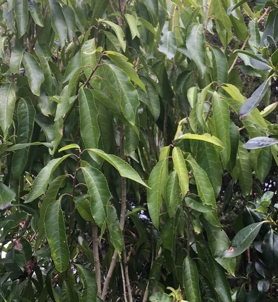

Wilting stems
Wilting stems
This is one possible explanation. Compare the signs below with those on your plant.

What to look for
Check the flexibility of the drooping stem, inspect the base for injury and feel the mix inside the root ball.
For a container plant, lift the growing pot out of its outer cover and check the base. A dry surface can hide a wet lower layer. Note how long the mix has stayed damp since the last thorough watering and whether water has been collecting beneath the pot.
Possible causes and next steps
Dry soil and saturated roots can both interrupt water supply. Adjust watering to the measured moisture and watch for newly wilted shoots.
How to tell similar problems apart
Compare the plant early in the day and during afternoon heat. Also check whether the root ball is dry, wet, or wet only around its edges.
Follow one drooping stem to its base. A kink or constricting tie can affect a single branch while others stay upright. Whole-plant wilt requires a moisture check below the surface. If the mix is wet and the base soft, further soaking may worsen root stress.
What to do now
If the root ball is dry, rewet it evenly; if already wet, let it drain. Keep recently transplanted plants sheltered from drying wind while checking roots.
Compare the leaves upstream and downstream of a bent or bruised section. A sharp transition at that point helps localize the interruption to one stem. At the next inspection, compare the moisture at root depth with your first reading.
What to check next
Recovery overnight suggests temporary demand for water exceeded supply. Persistent collapse of one shoot calls for inspection of that shoot’s base.